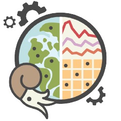
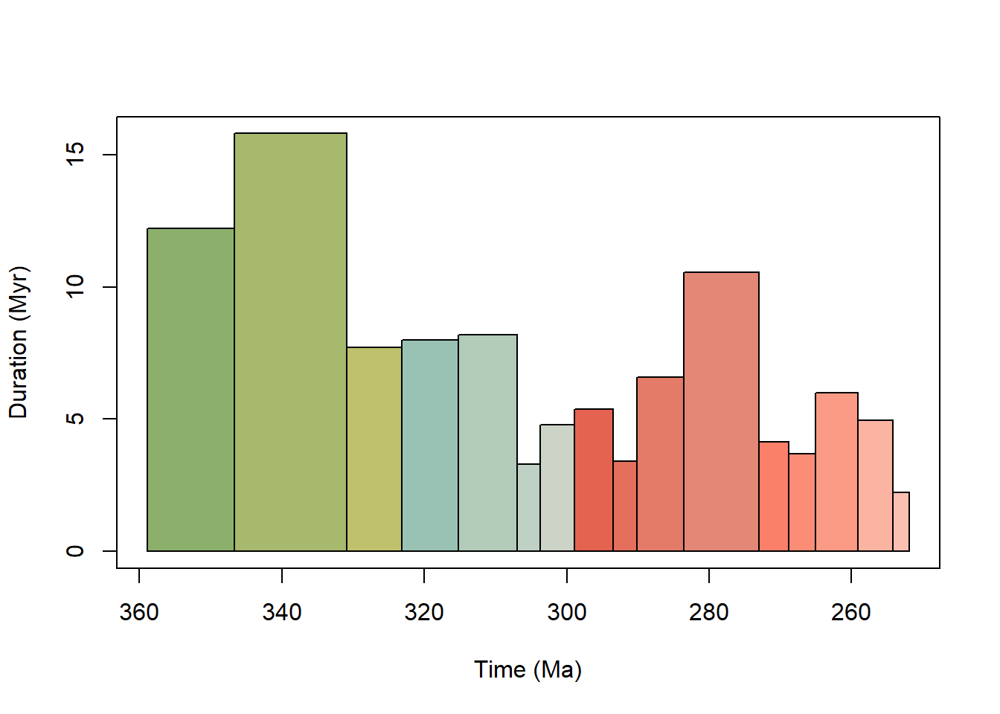
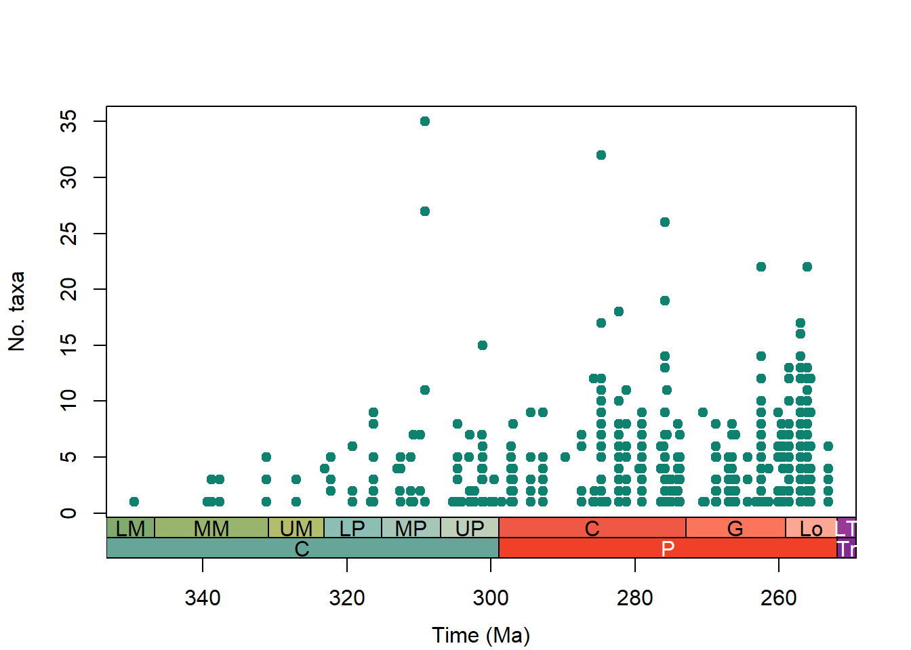

library(palaeoverse)
library(rphylopic)
library(rmacrostrat)
library(tidyverse)Módulo 4: Palaeoverse
Palaeoverse

palaeoverse es un paquete de R que busca facilitar el análisis de datos paleontológicos. Proporciona herramientas para:
Estandarizar datos fósiles
Analizar riqueza taxonómica y patrones de muestreo
Realizar simulaciones paleontológicas
Visualizar y conectar datos de bases abiertas
El paquete es parte de un ecosistema más amplio que incluye paquetes complementarios como sepkosky, phylopic y macrostrat.
🔗 Paquetes relacionados
| Paquete | ¿Qué hace? |
|---|---|
palaeoverse |
Funciones para estandarizar, analizar y visualizar datos fósiles |
sepkosky |
Accede a la base de datos de Sepkoski con información de géneros marinos fósiles |
phylopic |
Permite añadir siluetas de organismos fósiles a gráficos de R |
macrostrat |
Conecta con la base de datos Macrostrat (estratigrafía y litología) |
💻 Instalación
# Instalar desde CRAN o GitHub
install.packages("palaeoverse")
install.packages("sepkosky")
install.packages("rmacrostrat")
install.packages("rphylopic") En caso de no funcionar con la instalación típica lo hacemos por GitHub:
install.packages("devtools")
devtools::install_github("palaeoverse/palaeoverse")
devtools::install_github("palaeoverse/rmacrostrat")
install.packages("remotes")
remotes::install_github("palaeoverse/rphylopic")Cargar paquetes
Divesidad de Tetrápodos
Este ejercicio está inspirado por un ejemplo de Palaeoverse tetrápodos del Carbonifero y Pérmico
Importar y revisar los datos
Como siempre lo primero es revisar la estructura de los datos y su organización
# Importamos los datos de Tetrápodos
data(tetrapods)
str(tetrapods)'data.frame': 5270 obs. of 32 variables:
$ occurrence_no : num 146665 147090 147521 147523 147563 ...
$ collection_no : num 12943 13004 13043 13044 13046 ...
$ identified_name : chr "n. gen. Anconastes n. sp. vesperus" "Gorgonopsia indet." "n. gen. Procolophon n. sp. trigoniceps" "n. gen. Ophiodeirus n. sp. casei" ...
$ identified_rank : chr "species" "suborder" "species" "species" ...
$ accepted_name : chr "Anconastes vesperus" "Gorgonopsia" "Procolophon trigoniceps" "Araeoscelis casei" ...
$ accepted_rank : chr "species" "suborder" "species" "species" ...
$ early_interval : chr "Missourian" "Capitanian" "Induan" "Artinskian" ...
$ late_interval : chr "Gzhelian" NA "Olenekian" NA ...
$ max_ma : num 306 265 252 290 279 ...
$ min_ma : num 299 260 247 279 272 ...
$ phylum : chr "Chordata" "Chordata" "Chordata" "Chordata" ...
$ class : chr "Osteichthyes" "Osteichthyes" "Reptilia" "Reptilia" ...
$ order : chr "Temnospondyli" "Cotylosauria" "NO_ORDER_SPECIFIED" "Araeoscelidia" ...
$ family : chr "Trematopidae" NA "Procolophonidae" "Araeoscelidae" ...
$ genus : chr "Anconastes" NA "Procolophon" "Araeoscelis" ...
$ abund_value : num 2 1 10 2 6 2 1 39 56 2 ...
$ abund_unit : chr "specimens" "specimens" "specimens" "individuals" ...
$ lng : num -106.3 22 26.5 -98.9 -99.2 ...
$ lat : num 36.3 -32.4 -32.1 33.6 33.8 ...
$ collection_name : chr "El Cobre Canyon" "Hottentotsrivier Farm" "Donnybrook (Queenstown District)" "Mouth of Godwin Creek" ...
$ cc : chr "US" "ZA" "ZA" "US" ...
$ formation : chr "Cutler" "Abrahamskraal" "Katberg" "Nocona" ...
$ stratgroup : chr NA "Beaufort" "Beaufort" "Wichita" ...
$ member : chr NA NA NA NA ...
$ zone : chr NA "Tapinocephalus Assemblage" NA NA ...
$ lithology1 : chr "siltstone" "sandstone" "mudstone" "conglomerate" ...
$ environment : chr "dry floodplain" "\"floodplain\"" "fluvial indet." "terrestrial indet." ...
$ pres_mode : chr "body" "body,mold/impression" "body" "body" ...
$ taxon_environment: chr "brackish,freshwater,terrestrial" "terrestrial" "terrestrial" "terrestrial" ...
$ motility : chr "actively mobile" "actively mobile" "actively mobile" "actively mobile" ...
$ life_habit : chr "ground dwelling" NA NA NA ...
$ diet : chr "carnivore" "carnivore" NA NA ...unique(tetrapods$class)[1] "Osteichthyes" "Reptilia" "Saurischia"
Ejercicio
Crea una variable con la edad máxima y otro con la mínima
Code
lim_menor <- min(tetrapods$min_ma)
lim_mayor <- max(tetrapods$max_ma)Explorando las funciones de palaeoverse
Datos temporales
Palaeoverse tiene muchas funciones útiles para trabajar con datos temporales como time_bins()
# Creamos el intervalo temporal que deseamos usando time_bins()
pisos<- time_bins(interval = c("Carboniferous", "Permian"),
# Queremos que la división sea en pisos
rank = "stage",
# Que use los datos de la tabla del 2020
scale = "GTS2020",
# Visualizamos los intervalos creados
plot = TRUE)
head(pisos) bin interval_name rank max_ma mid_ma min_ma duration_myr abbr colour font
1 1 Tournaisian stage 358.9 352.80 346.7 12.2 T #8CB06C black
2 2 Visean stage 346.7 338.80 330.9 15.8 V #A6B96C black
3 3 Serpukhovian stage 330.9 327.05 323.2 7.7 Se #BFC26B black
4 4 Bashkirian stage 323.2 319.20 315.2 8.0 B #99C2B5 black
5 5 Moscovian stage 315.2 311.10 307.0 8.2 M #B3CBB9 black
6 6 Kasimovian stage 307.0 305.35 303.7 3.3 Ka #BFD0C5 blackpalaeoverse nos permite ajustar las edades númericas según el nombre del periodo
# Usamos la función look_up que compara los valores y nos regresa dos columnas
tetrapods <- look_up(tetrapods, int_key = interval_key)
# Reemplazamos valores NA con los originales
# ifelse nos permite hacer la evaluación directamente para todos los elementos
tetrapods$interval_max_ma <- ifelse(is.na(tetrapods$interval_max_ma),
tetrapods$max_ma, tetrapods$interval_max_ma)
tetrapods$interval_min_ma <- ifelse(is.na(tetrapods$interval_min_ma),
tetrapods$min_ma, tetrapods$interval_min_ma)
# Calcular edad media
tetrapods$interval_mid_ma <- (tetrapods$min_ma + tetrapods$max_ma)/2
# str(tetrapods)
# Removemos los valores que estén por fuera del intervalo deseado
cp_tetrapods <- subset(tetrapods, min_ma > min(pisos$min_ma) & max_ma <
max(pisos$max_ma))
# Ocurrencias asignadas por los intervalos deseados
# Este metódo asigna la ocurrencia al intervalo donde está su mayor parte
maj_tetrapods <- bin_time(occdf = cp_tetrapods,
bins = pisos,
method = 'majority')
colnames(maj_tetrapods) [1] "occurrence_no" "collection_no" "identified_name"
[4] "identified_rank" "accepted_name" "accepted_rank"
[7] "early_interval" "late_interval" "max_ma"
[10] "min_ma" "phylum" "class"
[13] "order" "family" "genus"
[16] "abund_value" "abund_unit" "lng"
[19] "lat" "collection_name" "cc"
[22] "formation" "stratgroup" "member"
[25] "zone" "lithology1" "environment"
[28] "pres_mode" "taxon_environment" "motility"
[31] "life_habit" "diet" "early_stage"
[34] "late_stage" "interval_max_ma" "interval_mid_ma"
[37] "interval_min_ma" "id" "n_bins"
[40] "bin_assignment" "bin_midpoint" "overlap_percentage"Datos espaciales
palaeoverse tambien nos permite obtener las paleocoordenadas de los puntos usando la función palaeorotate()
# Obtener las paleocoordenadas de los puntos
maj_tetrapods <- palaeorotate(occdf = maj_tetrapods, age = "bin_midpoint",
# Usaremos el famoso Paleomap como referencia
method = "point", model = "PALEOMAP")Si deseamos estudiar la distribución espacial de los datos lo mejor es hacer una grilla para así poder agrupar las ocurrencias y estudiarlas de manera discreta
# Creamos un intervalo espacial que es basicamente una grilla
maj_tetrapods <- bin_space(occdf = maj_tetrapods,
lng = 'p_lng',
lat = 'p_lat',
spacing = 100)Average spacing between adjacent cells in the primary grid was set to 103.6 km.
H3 resolution: 3
Ejercicio
Qué variables hemos añadido al data frame original y cuál es el significado de cada una de ellas?
Diversidad
Vamos a usar algunas funciones para ver la diversidad de tetrápodos
# Esta función filtra todos los valores únicos en cuanto a los taxones
generos_tetra <- tax_unique(maj_tetrapods,
genus = "genus",
family = "family",
order = "order",
class = "class",
# Queremos que se tenga hasta el nivel de género
resolution = "genus")
str(generos_tetra)'data.frame': 795 obs. of 5 variables:
$ class : chr "Osteichthyes" "Osteichthyes" "Reptilia" "Osteichthyes" ...
$ order : chr "Dicynodontia" "Cotylosauria" NA "Temnospondyli" ...
$ family : chr NA "Charassognathidae" "Nyctiphruretidae" "Zatracheidae" ...
$ genus : chr "Abajudon" "Abdalodon" "Abyssomedon" "Acanthostomatops" ...
$ unique_name: chr "Abajudon sp." "Abdalodon sp." "Abyssomedon sp." "Acanthostomatops sp." ...length(unique(maj_tetrapods$genus))[1] 793
Ejercicio
¿Por qué el largo de valores únicos de maj_tetrapods$genus es 2 filas mayor que el data frame?
Para calcular la diversidad tendremos en cuenta la cantidad de ocurrencias por colección
# Esta función nos permite extraer la cantidad de géneros por colección
coll_genera <- group_apply(occdf = maj_tetrapods,
group = c("collection_no"),
fun = tax_unique,
genus = "genus",
family = "family",
order = "order",
class = "class",
resolution = "genus")
# Obtenemos los nombres de géneros únicos por colección
unique_genera <- unique(coll_genera[, c("unique_name", "collection_no")])
# Calculamos el número de géneros únicos por colección
coll_taxa <- group_apply(unique_genera, group = "collection_no", fun = nrow)
# Renombramos las columnas
colnames(coll_taxa) <- c("n_taxa", "collection_no")
# Seleccionamos las columnas de edad geológica por colección
coll_info <- maj_tetrapods[, c("collection_no", "max_ma", "interval_mid_ma", "min_ma")]
# Eliminamos colecciones duplicadas
coll_info <- coll_info[!duplicated(coll_info[1]), ]
# Combinamos la información de edad con la cantidad de géneros
alpha_data <- merge(coll_info, coll_taxa, by = "collection_no")
# Revisamos del nuevo dataframe
str(alpha_data)'data.frame': 1238 obs. of 5 variables:
$ collection_no : num 11149 11152 11165 11323 12943 ...
$ max_ma : num 290 296 299 303 306 ...
$ interval_mid_ma: num 285 284 294 301 302 ...
$ min_ma : num 279 272 290 299 299 ...
$ n_taxa : int 1 1 9 1 1 7 6 1 1 1 ...Ahora vamos a graficar usando las funciones de palaeoverse
# Crear el gráfico de diversidad alfa (número de taxones por colección) en el tiempo
plot(alpha_data$interval_mid_ma, # Coordenada x: edad media (en Ma) de cada colección
alpha_data$n_taxa, # Coordenada y: número de géneros únicos por colección
axes = FALSE, # No dibujar los ejes por defecto, los agregaremos manualmente
xlim = rev(range(alpha_data$interval_mid_ma, na.rm = TRUE)), # Invertir el eje x (de pasado a presente)
xlab = " ", # Etiqueta vacía por ahora, la agregaremos más abajo
ylab = "No. taxa", # Etiqueta del eje y
pch = 19, # Estilo de punto: sólido
col = "#0e826f") # Color del punto (verde azulado)
# Añadir un marco (box) alrededor del gráfico
box()
# Añadir el eje vertical (eje Y) en el lado izquierdo
axis(2)
# Añadir el eje X con nombres geológicos (épocas y periodos)
# Esta función es del paquete `deeptime` y añade intervalos geológicos automáticamente
axis_geo(side = 1, intervals = list("epochs", "periods"))
# Agregar la etiqueta del eje X, desplazada hacia abajo
title(xlab = "Time (Ma)", line = 4)
Paso 4: Visualizar siluetas con phylopic
rCopyEdit
# Añadir silueta de un trilobite a un gráfico add_phylopic("Trilobita", alpha = 0.5)
También podés buscar nombres con
search_phylopic("Ammonite").
Paso 5: Conectar con Macrostrat
rCopyEdit
# Buscar formaciones con el término "Chihuahua" formations <- map_unit_search(strat_name = "Chihuahua") head(formations)
citation("palaeoverse")To cite palaeoverse in publications, use the following citation:
Jones, L.A., Gearty, W., Allen, B.J., Eichenseer, K., Dean, C.D.,
Galván S., Kouvari, M., Godoy, P.L., Nicholl, C.S.C., Dillon, E.M.,
Flannery-Sutherland, J.T., Chiarenza, A.A. 2023. palaeoverse: A
community-driven R package to support palaeobiological analysis.
Methods in Ecology and Evolution. 14(9), 2205--2215. doi:
10.1111/2041-210X.14099
A BibTeX entry for LaTeX users is
@Article{,
title = {palaeoverse: A community-driven R package to support palaeobiological analysis},
author = {Lewis A. Jones and William Gearty and Bethany J. Allen and Kilian Eichenseer and Christopher D. Dean and Sofía Galván and Miranta Kouvari and Pedro L. Godoy and Cecily S. C. Nicholl and Lucas Buffan and Erin M. Dillon and Joseph T. Flannery-Sutherland and Alfio Alessandro Chiarenza},
year = {2023},
journal = {Methods in Ecology and Evolution},
volume = {14(9)},
pages = {2205--2215},
doi = {10.1111/2041-210X.14099},
}citation("rmacrostrat")To cite rmacrostrat in publications, use the following citation:
Jones, L.A., Dean, C.D., Gearty, W., and Allen, B.J. 2024.
rmacrostrat: An R package for accessing and retrieving data from the
Macrostrat geological database. Geosphere, v. 20:6, 1456--1467. doi:
10.1130/GES02815.1
A BibTeX entry for LaTeX users is
@Article{,
title = {rmacrostrat: An R Package for fetching geologic data from the Macrostrat database.},
author = {Lewis A. Jones and Christopher D. Dean and William Gearty and Bethany J. Allen},
year = {2024},
journal = {Geosphere},
volume = {20},
number = {6},
pages = {1456--1467},
doi = {10.1130/GES02815.1},
}